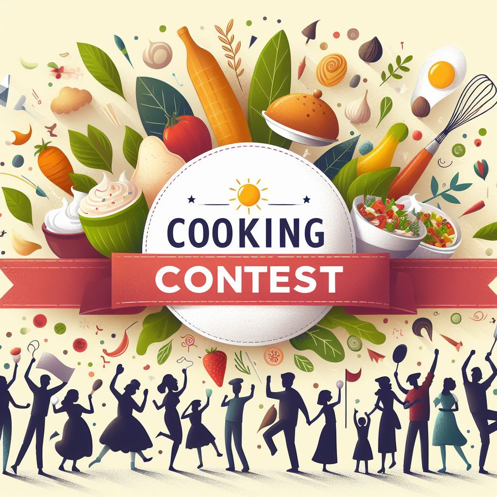

4o Concurso de Cocina Creativa
Fiestas Cornellá de Llobregat
Estamos entisuasmados de presentaros el 4º Concurso de Cocina Creativa consecutivo llevado a cabo durante las Fiestas Mayores del municipio de Cornellá de Llobregat. ¿No te pudiste presentar las ediciones anteriores? ¡No dudes en hacerlo este y demuestra que el reino de los fogones te pertenece! ¿Has participado anteriormente? ¡Estaremos súper emocionados de volverte a tener con nosotros!
Saber más 30 de Mayo a las 12.30
Plaza de la Iglesia